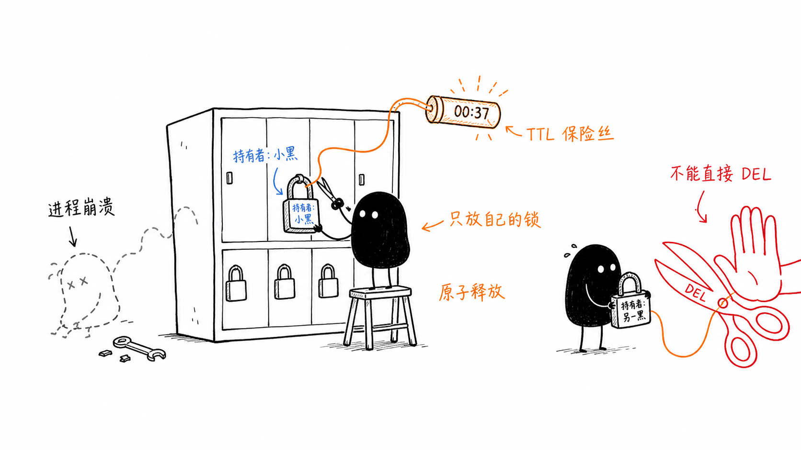

10｜多个 Agent 并发操作同一个世界：隔离优于共享
你好，我是李号双。
前两节课我们分别解决了单 Agent 的循环控制和多 Agent 间的通信规范。接下来进入一个更常见的场景：多个 Agent 真正并行执行任务时，如何安全地访问共享数据。
考虑这样一个任务：5 个数据库并发迁移到新灾备中心，5 个 Agent 同时开工。有三样资源需要共享：
进度要共享：哪几个库迁完了、还剩哪些没动，得记在同一份进度文件里，5 个 Agent 人人要读、也要改。
配置要共用：源库和目标库的地址、限流规则、切换开关，全局只有一份，要改就得先拿锁，免得别人读到改了一半的配置；
数据库连接要抢：连接不是无限的，池子里就那么几个，5 个 Agent 干活都得从里面拿，拿不到就得等。
三种故障，就一幕一幕埋在这三样东西里。
场景一：竞态覆盖——数据静默丢失。
真实系统里，共享的进度多半落在文件里，每个 Agent 更新它的写法长这样：
三步之间没有任何保护，灾难就藏在这道缝里。Agent-1 费劲把 test_a 的 dump 做完了，正要写回进度；毫秒之间，Agent-2 也在写回，但它手里那份，是读进来的旧值，那时 Agent-1 还没来得及写，Agent-2 这一笔覆盖写下去，Agent-1 的记录就像从来没存在过一样。
场景二：孤儿锁——持有者已经死了，锁还活着。
解决场景一的问题，是加锁：进度文件要加锁，全局配置更要加锁。可 Agent 程序非正常退出，释放锁的代码永远不会执行，这把锁就成了没人认领的“孤儿锁”。剩下的 4 个 Agent 全部卡在“获取锁”这一步，谁也动不了。整个迁移任务直接进度归零。
场景三：死锁——互相持有，互相等待。
锁加多了，还会加出新的病：各自拿着一把锁，同时又在等别人手里的锁。
等待链闭成一个环，谁也不肯撒手，谁也拿不齐。此时进程处于“阻塞等待”状态，CPU 占用率往往很低，但系统吞吐量归零。
这时候你可能会纳闷：这不就是最基础的多线程并发问题吗？为什么在 Agent 系统里，这些看似基础的问题会演变得如此难以收拾？
为什么主流框架都“不敢”管锁？
面对这些乱象，很多开发者的第一反应是找“组织”：我的 Agent 框架能不能管管这事？
我去翻了翻目前业界最火的几个框架，像 LangGraph 和 Claude Code，你会发现一个很有意思的现象：它们在并发控制上，都极其“克制”。LangGraph 搞了状态合并，Claude Code 搞了任务隔离，但唯独没有提供一个内置的、声明式的“工具锁”机制。
它们是没想到吗？当然不是。它们是不敢，也是不愿。把锁机制硬塞进框架层，是个巨大的坑，原因远比表面看到的要深。
首先，框架搞不懂业务语义。它不知道“数据库 A”和“文件 B”冲不冲突，也不知道“读”和“写”能不能共存。框架强行管，要么锁得太粗（性能烂），要么锁得太细（管理成本爆炸）。
其次，Agent 通常是分布式的。框架要管锁，就得内置 Redis 或者 etcd，这瞬间把框架搞得又重又复杂，引入了外部状态依赖。
所以，主流框架的哲学很一致：我负责“怎么干活”（编排），你负责“活儿细不细”（实现）。它们的选择是：通过架构设计，尽量从源头消灭冲突，而不是靠加锁来容忍冲突。
上策：不战而屈人之兵
在工程领域，最高级的并发控制，就是你根本感觉不到它的存在。这就是“隔离”的艺术。
空间隔离：Claude Code 的“平行宇宙”
以 Anthropic 的 Claude Code 为例，当它需要并发重构三个模块时，它不会让三个 Agent 在同一个工作目录里抢文件改，而是通过 Git Worktree 技术，给每个 Agent 分配一个独立的“平行宇宙”（沙盒）。
Agent A 在 worktree_1 里折腾 module_a，Agent B 在 worktree_2 里折腾 module_b。它们互不干扰，直到最后才通过主 Agent 进行合并。
这里有个很深刻的点：物理隔离隔开的不仅是磁盘文件，更是 Agent 的认知空间。如果两个 Agent 在同一个目录下协作，即使文件锁正常工作，它们各自读到的代码库可能处于语义上不完整的中间状态，推理逻辑很容易跑偏。
举个例子。Agent A 的任务是“把全项目日志从 print 迁移到 logging”，它一个文件一个文件地改；Agent B 的任务是给支付模块加一个退款接口，B 恰好在 A 改到一半时进场——payment.py 已经换成了新风格 logger.info()，但周围的文件还是满屏的 print。B 扫了一眼，得出结论：本项目两种日志风格并存，我跟着当前文件的风格走。于是新接口里全是 print。注意：这整个过程里，文件锁都在正常工作，B 读到的每一个文件，字节上都是完整的，只是整个代码库处于语义上不完整的中间状态。
状态合并（LangGraph 的思路）
LangGraph 的核心思路是状态合并优于状态加锁。它通过图结构让多个节点（Agent）并发执行，但不允许节点直接覆盖共享的 State。开发者需要提供 Reducer 函数（比如 operator.add），当多个节点并发返回结果时，底层运行时自动调用 Reducer 对 State 进行确定性合并。比如两个 Agent 同时往 messages 列表里追加消息，系统不会让后写者覆盖先写者，而是用 Reducer 把两个结果拼起来。这就从架构层面规避了“丢失更新”问题。
中策：Tool 层的自卫法则
当然，理想很丰满，现实很骨感。企业级业务里，总有那么几个“烫手山芋”——比如全局配置、核心业务表——是所有 Agent 都必须争抢的。既然框架不管，谁来管？只能靠 Tool 实现者自己。
Tool 是 Agent 手里唯一的武器，这个武器必须是“防弹”的。这里有几条在 Tool 层实现并发控制时需要注意的地方。
哪怕再麻烦，也要拥抱原子性
千万别在 Agent 层面做“读 - 改 - 写”。那是并发万恶之源。
错误示范：
这在并发下必挂。Agent A 和 Agent B 同时读到 pending，同时通过 if 判断，同时发起更新——同一个任务就被处理了两次。中间那个"读完了、还没写"的缝隙，就是并发事故的温床。
正确的做法是，把这些逻辑全部封装进 Tool 内部，利用数据库的原子操作，比如 UPDATE ... WHERE。让“检查”和“写入”在一条语句里完成：
正确示范：
Agent 侧的调用只剩一行：tool.claim_task(task_id=123)。谁抢到了、谁没抢到，数据库用 rowcount 给出唯一正确的答案，不存在“两个 Agent 都以为自己抢到了”的窗口。
警惕 LLM 带来的“时间错配”陷阱
这是 Agent 系统与传统软件最大的不同点，也是最容易让人困惑的地方。
在传统后端开发中，我们偏爱乐观锁（CAS），因为重试成本低，不过是毫秒级的事。但在 Agent 系统里，如果 Tool 的逻辑链条中间夹了一次 LLM 调用，情况就变得微妙了。
有些同学会担心：“如果 LLM 推理过程中数据被别人改了，乐观锁岂不是要重试？重试就要再调一次 LLM，而且 LLM 是概率模型，第二次推理的结果可能完全不同。”
出于这种顾虑，很多人会构想一个“万无一失”的方案：既然怕变，那我干脆加上悲观锁，把资源锁死，让 LLM 在一个“绝对隔离”的环境里推理，不就稳了吗？
这听起来顺理成章，但却忽略了工程上的一个基本事实：数据库锁（悲观锁）是为毫秒级事务设计的，而 LLM 的推理往往是秒级甚至分钟级操作。如果你在持有数据库连接或悲观锁的情况下去调用 LLM，一旦 LLM 响应稍慢，长时间的阻塞会迅速耗尽连接池资源。这时候，不仅仅是单个 Agent 受阻，整个系统的吞吐能力都会受到严重牵连。
正确的做法依然是拥抱乐观锁（CAS），但判断它用得对不对，标准只有一条：冲突发生时，重试的范围里有没有 LLM 调用。先看一个“重试的范围内有 LLM 调用”的例子：
看这个代码结构：读在 LLM 之前，检查在 LLM 之后——LLM 被夹在“读”和“检”之间，整个圈进了重试的范围。冲突一发生，循环里最贵的一环就得陪着重来。
修法简单得出奇：把 while True 删掉，让代码变成一条直线。冲突了就干脆地失败，把重试权往上抛：
那冲突了，这活儿还干不干？干，但不在这儿干。重试不放在业务执行层，而是交给调度层：由 Agent 进程内的调度器、或者分布式消息队列，按照预设的退避策略重新派发这个任务，新一轮执行自然会读到最新数据（消息队列处理消费失败就是这个套路：绝不在 handler 里死循环，失败了重新投递）。
对于纯只读的 LLM 推理场景，比如读取文档生成摘要，由于不涉及状态变更，直接无锁并发即可。
别忘了给锁装个“保险丝”（TTL）与“安全续约”
既然要在 Tool 层处理并发，就不可避免地要面对分布式锁的实现问题。
Agent 进程的一大特点是“脆弱”，进程一崩，锁就变成了没人认领的“孤儿锁”，后面的 Agent 全部堵死。如果进程持有分布式锁，最好加上 TTL。
但 TTL 的设置是个技术活。设短了，Tool 还没跑完锁就过期了，安全机制失效；设长了，进程崩溃后资源要很久才能释放。
更成熟的工程实践是引入“心跳续约”机制，但实现方式至关重要。在 Python（尤其是 asyncio）的 Agent 运行时里，我建议你不要在 Tool 内部裸开一个后台线程去续约。
这很容易写出 Bug：如果 Tool 的主逻辑卡死了，后台线程可能还在不断地给锁续命，形成一把“僵尸锁”——明明进程已经假死，锁却永远不释放。
更优雅的方案是依赖进程级锁管理器。我们将锁的生命周期管理上升到 Agent 进程的基础设施层：
Tool 的职责：只负责声明锁的意图，专注于业务逻辑。
进程级锁管理器的职责：作为 Agent 运行时的一部分，统一管理所有锁的获取、释放和续约。
这种设计的一个巧妙之处在于，续约任务的调度是与 Agent 的主事件循环绑定的。如果 Agent 主循环卡死，事件循环停滞，续约任务自然也就失去了调度权，锁会随着 TTL 到期而自动释放。但需注意，这个机制仅防护主线程阻塞场景，覆盖不到线程池 / 进程池内的业务阻塞。

下策：Agent 的“修养”
锁加好了，如果拿不到锁怎么办？这就回到了 Agent 框架该干的事——推理与决策。
Agent 不应该像个傻傻的微服务那样死循环重试，它应该具备“动态让步”的智慧。
当 Tool 返回 {"error": "RESOURCE_BUSY", "message": "Database A is busy", "hint": "Try Database B"} 时，Agent 应该能读懂这个 hint，然后说：“哦，A 忙，那我先去处理 B 吧。”
这种理解冲突，主动避让的能力，才是 Agent 系统区别于传统并发程序的灵魂所在。
总结
我们在构建多 Agent 系统时，脑子里一定要有一张清晰的防御地图：
第一层（框架层）：隔离。 能拆任务就拆任务，能分目录就分目录。像 Claude Code 那样用 Worktree，让 Agent 们老死不相往来，这是最干净的方案。
第二层（Tool 层）：原子与精准锁。 既然要争抢资源，就在 Tool 里把锁加死。核心原则是：涉及状态修改的 LLM Tool 应优先使用乐观锁（CAS），避免长事务阻塞资源；仅在非 LLM 交互的极短临界区才考虑悲观锁。纯只读场景天然无锁，无需额外处理。记得用 TTL 防住进程崩溃的孤儿锁，并通过进程级管理器实现安全的锁续约。
第三层（Agent 层）：智慧。 遇到锁冲突不硬刚，读懂错误信息，换个任务干，实现系统层面的异步让步。
把这张地图再压缩一步，就是一张决策表。左边 2-4 列是你观察到的特征，右边 5-6 列是该采取的行动，从上往下对号入座，第一行命中的就是你的方案：
表的顺序就是优先级：无锁 → 隔离 → 抢占 → 乐观锁 → 悲观锁，一行比一行重。设计时从第一行问起，尽量让冲突不发生，而不是发生后补救。不要试图在框架里造一个大一统的锁管理器，那是反模式。真正的工程智慧，是在清晰的边界上，用最轻量的手段解决问题。
思考题
下面这个“给文章点赞”的 Tool，单 Agent 跑的时候一直正常；某天并发跑了两个 Agent，运营发现点赞总数总是比实际点击数少。
问题出在哪儿？试着用这一讲的方法，把它改成一条 SQL 解决。欢迎你在留言区分享自己的解决思路，如果你有所收获，也欢迎你分享给需要的朋友，我们下节课再见！